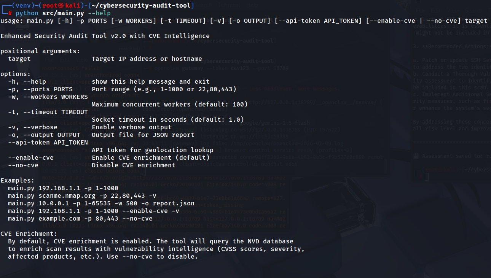
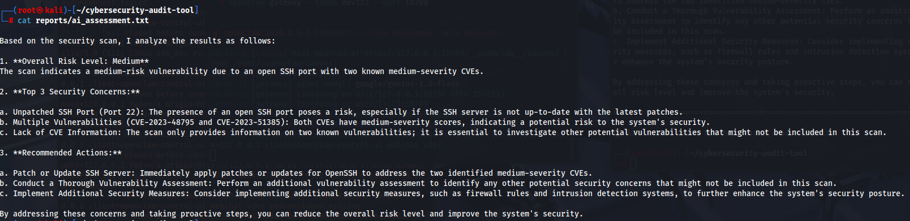
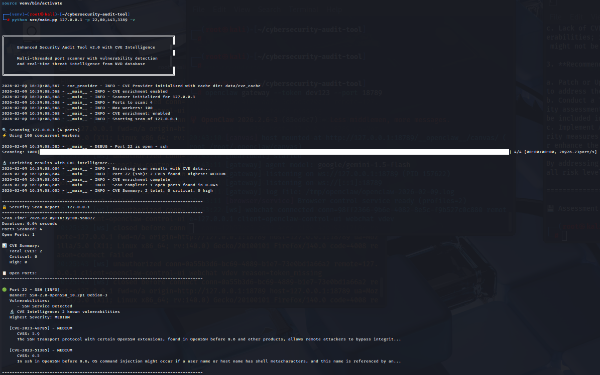
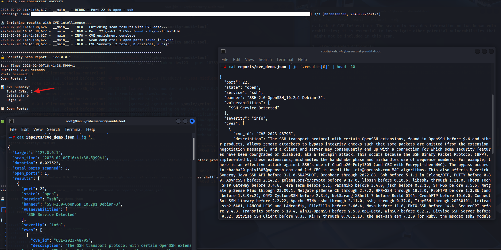

Building a Cybersecurity Audit Tool
From Port Scanner → CVE Intelligence → AI-Powered Security Platform
Python 3.13ThreadingCVE IntelligenceAI Automation
Why I Built This
This started as a basic port scanner but evolved into a full SOC-style vulnerability intelligence platform with CVE enrichment, caching, AI analysis, and reporting.
CVE Intelligence Engine
The scanner now enriches detected services with real vulnerability data from the NVD database including CVSS scores, CWE IDs, and affected software.

CVE command-line options for enabling vulnerability enrichment

Live CVE enrichment with CVSS scoring and vulnerability metadata

Multiple vulnerabilities detected and classified by severity

CVE engine correlating open services with known exploits
Machine-Readable Security Reports
All scan results can be exported as structured JSON to integrate into SIEM, SOAR, or automation pipelines.

Full JSON vulnerability report with CVE data, CVSS scores, and service fingerprints
Real SOC Workflow
Target → Port Scan → Service Fingerprint → CVE Lookup → CVSS Scoring → AI Analysis → JSON Report → Alerts
Why This Matters
This project demonstrates real SOC-grade skills:
- Service fingerprinting
- CVE & CVSS correlation
- Automated threat intelligence
- Machine-readable security reporting
- AI-assisted triage
Try It Yourself
git clone https://github.com/karim871/cybersecurity-audit-tool
cd cybersecurity-audit-tool
python src/main.py 127.0.0.1 -p 1-1000 --enable-cve --ai-analysis